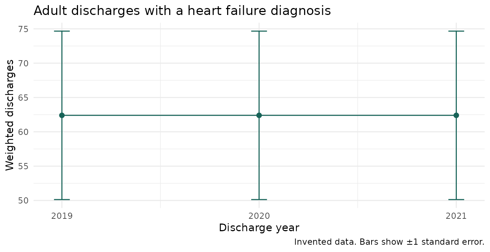

Create a survey-weighted Table 1, a regression table, a trend figure, a cohort attrition table, and a design report from the same invented sample.
library(easyNIS)
library(dplyr)
library(srvyr)
library(gtsummary)
library(ggplot2)
nis <- nis_open(nis_example(years = 2019:2021)) |>
nis_flag_dx(heart_failure = "I50") |>
mutate(age_group = case_when(
AGE >= 90 ~ "90 and older",
AGE >= 65 ~ "65 to 89",
AGE >= 18 ~ "18 to 64"
))
design <- nis_design(
nis, cohort = AGE >= 18,
keep = c(AGE, age_group, LOS, heart_failure)
)Table 1 with suppression
tbl_svysummary(design, by = age_group, include = LOS, label = LOS ~ "Length of stay") |>
nis_suppress() |>
as_gt()| Characteristic |
18 to 64 N = 1861,2 |
65 to 89 N = 1471,2 |
90 and older N = Masked1,2 |
|---|---|---|---|
| Length of stay | 6.0 (5.0, 8.0) | 3.0 (1.0, 9.0) | ≤10 |
| 1 Median (Q1, Q3) | |||
| 2 Statistics based on unweighted n ≤10 are marked ≤10; cells contributed by fewer than two distinct year-scoped hospitals are marked '<2 hospitals', regardless of count. The discharge-count mask takes precedence when both rules apply. Dichotomous rows with a protected complement are marked 'Masked' when the displayed event passes both rules. When a categorical variable has one masked level in a column, the smallest remaining positive level is marked 'Masked'. Before sharing under the HCUP Data Use Agreement, review tables for other derivable cells. | |||
The oldest age group has too few sampled discharges. Suppression masks its denominator and summary. Before sharing results, review what could be recovered by comparing tables or subtracting from totals. Check disclosure before sharing results
Survey-weighted regression table
fit <- survey::svyglm(LOS ~ heart_failure + AGE, design = design)
tbl_regression(fit, label = list(heart_failure ~ "Heart failure", AGE ~ "Age")) |>
as_gt()| Characteristic | Beta | 95% CI | p-value |
|---|---|---|---|
| Heart failure | |||
| FALSE | — | — | |
| TRUE | 0.18 | -0.53, 0.89 | 0.6 |
| Age | -0.02 | -0.03, -0.01 | <0.001 |
| Abbreviation: CI = Confidence Interval | |||
The heart failure coefficient estimates the age-adjusted difference
in mean length of stay. Use nobs(fit) for the unweighted
fitted sample size. Make tables and fit
survey models
Annual discharge trend
annual <- nis_annual_totals(nis, cohort = AGE >= 18 & heart_failure) |>
nis_suppress(
count_col = n, hospital_col = hospitals,
weighted_cols = c(discharges, discharges_se)
) |>
mutate(across(c(discharges, discharges_se), ~ suppressWarnings(as.numeric(.x))))
ggplot(annual, aes(YEAR, discharges)) +
geom_line(colour = "#176358", na.rm = TRUE) +
geom_point(colour = "#176358", size = 2, na.rm = TRUE) +
geom_errorbar(
aes(ymin = discharges - discharges_se, ymax = discharges + discharges_se),
width = 0.08, colour = "#176358", na.rm = TRUE
) +
scale_x_continuous(breaks = annual$YEAR) +
labs(
x = "Discharge year", y = "Weighted discharges",
title = "Adult discharges with a heart failure diagnosis",
caption = "Invented data. Bars show ±1 standard error."
) +
theme_minimal()
Each point uses the original discharge weights for one complete year. Converting the displayed values back to numbers leaves masked years missing in the figure. Estimate trends across NIS years
Cohort attrition table
nis_attrition(
nis, Adult = AGE >= 18, `Heart failure diagnosis` = heart_failure,
.design = TRUE
) |>
select(criterion, n_unweighted, n_dropped_unweighted, pct_retained) |>
gt::gt() |>
gt::cols_label(
criterion = "Eligibility step", n_unweighted = "Remaining",
n_dropped_unweighted = "Dropped", pct_retained = "Retained (%)"
) |>
gt::fmt_number(columns = pct_retained, decimals = 1) |>
gt::sub_missing(missing_text = "—")| Eligibility step | Remaining | Dropped | Retained (%) |
|---|---|---|---|
| Valid design discharges | 288 | — | 100.0 |
| Adult | 288 | 0 | 100.0 |
| Heart failure diagnosis | 162 | 126 | 56.2 |
Each row counts sampled discharges that pass that step and all earlier steps. For real data, check whether differences between steps reveal small counts before sharing the table. Define and save a cohort
Design report for a fitted model
nis_design_report(fit)
#> NIS design report
#> Years: 2019, 2020, 2021
#> Weights: DISCWT
#> # A tibble: 4 × 2
#> stage discharges
#> <chr> <dbl>
#> 1 Input sample 288
#> 2 Original cohort 288
#> 3 Current domain 288
#> 4 Fitted model 288The report distinguishes the input sample, the cohort, the model domain, and the discharges used to fit the model. How the NIS survey design works